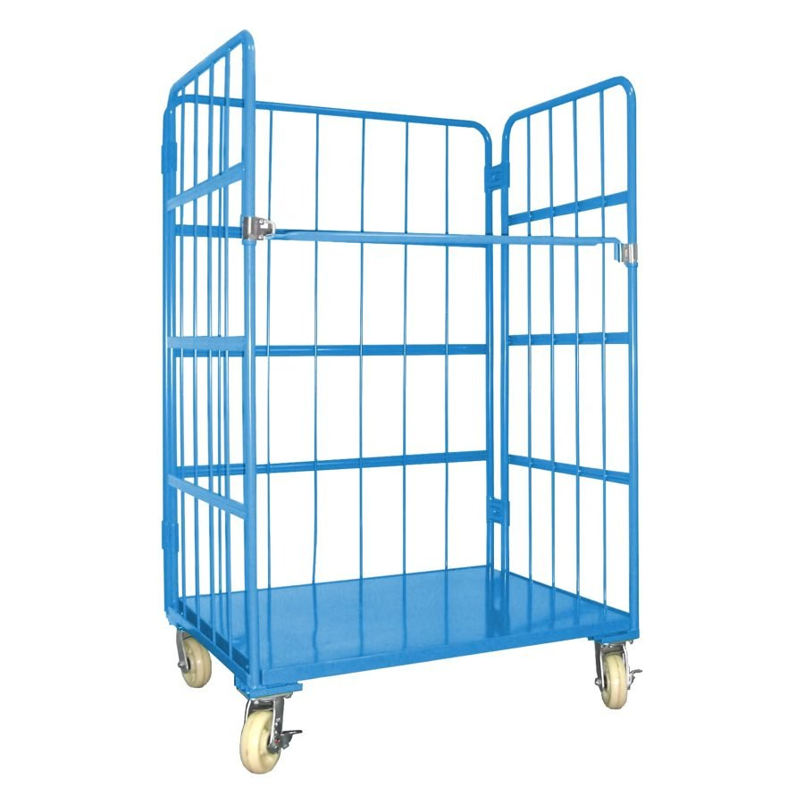

首页 / 运输与物流 / 物料搬运 / 手动托盘车备用承重轮，聚氨酯，Ø80 × 70 mm （货叉轮, 每台车4只）

运输与物流 / 物料搬运
手动托盘车备用承重轮，聚氨酯，Ø80 × 70 mm （货叉轮, 每台车4只）
适用于手动托盘车的PU承重轮Ø80 × 70 mm：更安静、保护地面，可替换磨损的货叉轮，可配成4只一套。
承重轮（货叉轮）在货叉前端承受手动托盘车的额定载荷，是最常见的易损件：聚氨酯胎面，尺寸Ø80 × 70 mm，轴承位47 × 14 mm（相当于孔径20 mm的6204深沟球轴承）。品质标志包括胎面与轮芯牢固粘合不脱层、轴承位加工精确，以及直径和宽度尺寸准确，因为82 × 80或85 × 80等相邻规格无法通用。商业买家要求提供每只轮的额定载重、REACH合规性和尺寸图；每台车多装4只轮（串联式）或2只轮，转向轮（180或200 × 50 mm）是另一种部件。
技术参数
| 尺寸（直径×宽度） | 80 × 70 mm（承重轮／货叉轮） |
|---|---|
| 胎面 | 聚氨酯（PU） |
| 轴承位 | 47 × 14 mm（相当于6204轴承，孔径20 mm） |
| 用途 | 手动、半电动和全电动托盘车及堆垛车 |
| 每台车用轮数 | 4只（串联式）或2只（单轮）；转向轮180/200 × 50 mm另购 |
| 海关编码（HS） | 84312000 |
欧盟标准与法规
EN 1757工业车辆安全：人力推行车辆，含手动托盘车REACH (EG) 1907/2006化学品法规：胎面和轮芯材料的SVHC信息义务及物质限制（附件XVII）ISO 15滚动轴承：向心轴承外形尺寸ISO 868塑料和硬质橡胶：用邵氏硬度计测定压痕硬度，用于确定PU硬度BetrSichV德国《工业安全条例》：商业使用工作设备的维护与检查（备件须符合相应额定载荷等级）VerpackG / LUCID德国包装法：在LUCID包装登记系统注册，并为纸箱、袋子和薄膜参与回收体系
搭配产品
本类别其他产品
钢制建筑手推车 （独轮车），充气轮坚固耐用的单轮手推车，配镀锌钢斗，用于工地搬运碎石、砂浆和建筑材料。
300公斤电动手推车 （电动独轮运输车），锂电池电池驱动的电动手推车，可轻松搬运重物，适用于坡道和不平整地面。
2.0吨锂电池平衡重式电动叉车零排放电动平衡重式叉车，适用于厂房内及硬化场地的装卸和物料搬运。
3.0吨柴油平衡重式叉车 （内燃, 欧盟Stage V）坚固耐用的柴油平衡重式叉车，适用于未硬化工地和堆场的装卸、托盘搬运及物料搬运。
钢制手推搬运车 （两轮手推车），载重200公斤，充气轮坚固的钢管手推搬运车，用于工地和仓库搬运水泥袋、纸箱和设备，充气轮适合坡道和不平整地面。
运输周转箱 / 欧标堆叠箱 600×400×320 mm （PP）坚固可堆叠的欧标尺寸塑料箱，用于工地和仓库中存放和运输工具、小件材料及配件。
10立方米拉臂式垃圾箱 （勾臂车用），钢制焊接钢制容器，用于装运建筑垃圾、混合废物和废金属，由勾臂车吊装、运输和卸料。
独轮手推车备用轮，免充气 （PU实心轮胎, 塑料轮毂）Ø400 mm （4.00-8）适用于工地和园艺独轮手推车的免充气备用轮：塑料轮毂配PU发泡轮胎，无需再充气。
折叠平板推车，承重150 kg （折叠扶手, 载货面约72 × 47 cm, 4轮）折叠式钢制平板推车，可搬运最重150 kg的纸箱、工具箱和欧标周转箱，扶手放倒后可平放存放。
铝制爬楼手推车，承重150 kg （可折叠, 爬楼轮组, 伸缩拉杆）轻便可折叠的铝制手推车，配爬楼轮组和伸缩拉杆，适用于搬家、仓库和配送。
折叠式平板推车/物料车，承重500 kg （钢制平板900 × 600 mm, 橡胶轮）折叠式钢制平板推车，用于工地、仓库和车间搬运最重500 kg的材料、纸箱和设备，扶手放倒后可平放存放。
棘轮拉紧带 25毫米×5米 涤纶带钩棘轮绑带，用于货物固定。
手动剪式升降台 脚踏泵 500-1000公斤带脚踏泵的移动液压升降台。
电动堆高车 1.5吨 3米 步行式用于托盘货架的电池步行式堆高车。
重力滚筒输送线 钢/不锈钢用于纸箱和托盘的无动力滚筒线。
80级链条吊索 单肢 带钩用于吊车和葫芦的80级链条吊索。

可折叠网格笼车 镀锌带网格侧板的折叠物流笼车。
低位手动液压搬运车 2.5吨低起升高度的手动液压搬运车。
手动称重搬运车 2吨 模拟秤内置秤的手动搬运车。